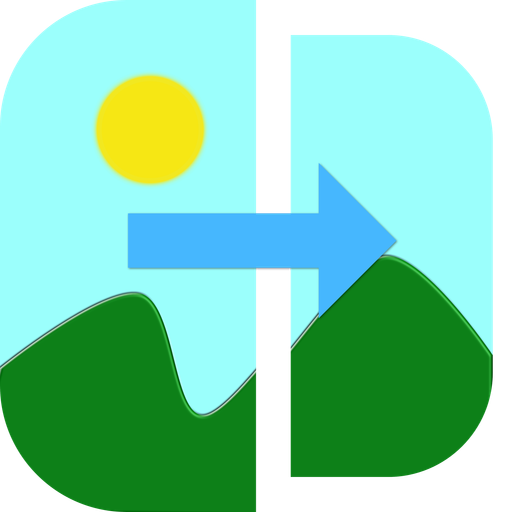
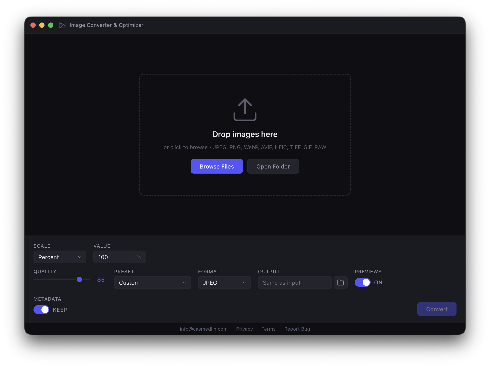

Batch convert, resize, and optimize images — 100% offline
v1.0.0
Convert hundreds of images at once with a single click. Drag, drop, and done.
JPEG, PNG, WebP, AVIF, HEIC, TIFF, GIF, plus 20+ RAW camera formats.
100% offline. No uploads, no tracking, no accounts. Your images never leave your device.
Icons, social media, web, print — optimized sizes and formats built right in.
Available for macOS, Windows, and Linux. Same great experience everywhere.
Built with Electron and sharp. MIT licensed — free forever, no strings attached.
